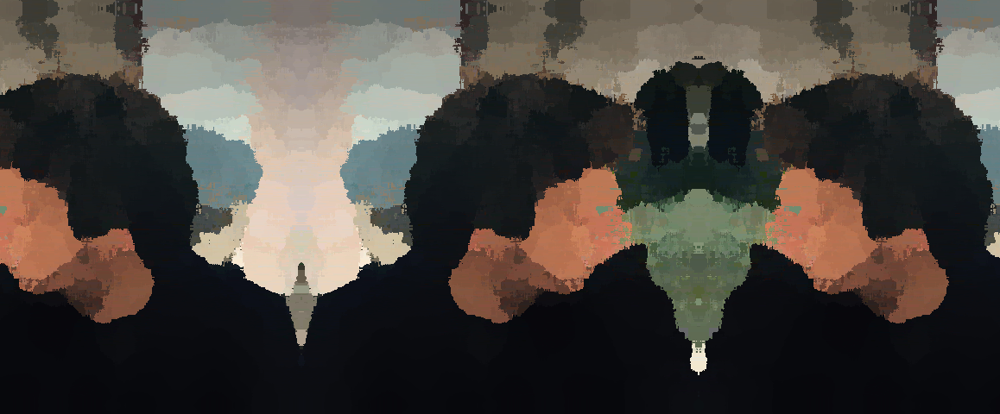

[["convert","$INPUT","-interpolate","Blend","-spread","20","$OUTPUT"]]
[["convert","$INPUT","-paint","9","$OUTPUT"]]
[["convert","$INPUT","-set","option:distort:viewport","1158x480-349-10","-virtual-pixel","mirror","-filter","point","-distort","SRT","0","+repage","$OUTPUT"]]
